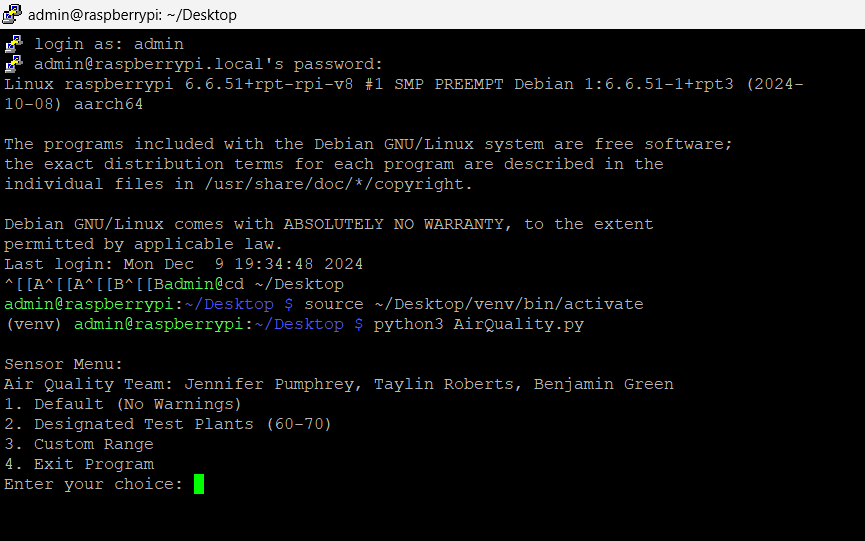
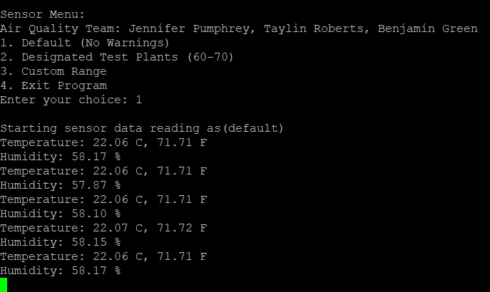
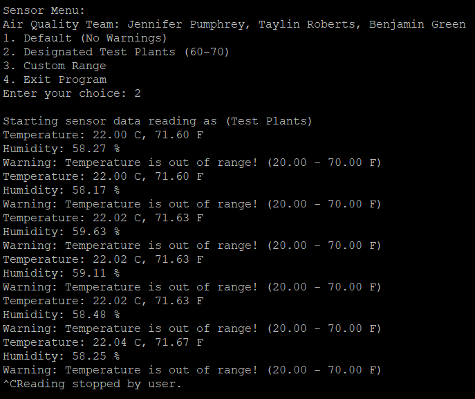
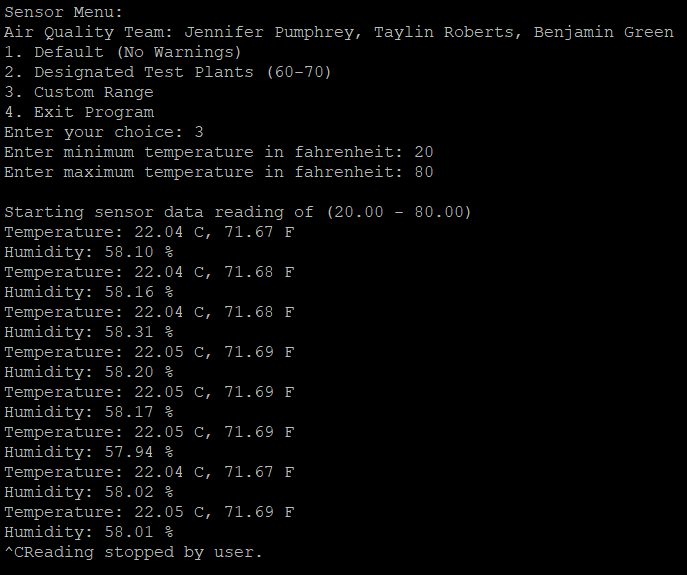
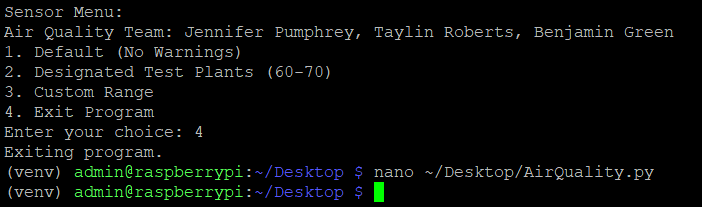

Result
The result of our project is a resounding success below are all the different inputs and their results.
We have made a start-up menu that allows users quick access to common run modes, or their own custom inputs.
This is the boot up sequence that we have made available for those using this sensor.

Here is it running in the default state that the given code expected

Here is it running with warnings active for the plants we used to test this.

Here is it running with warnings active for user entered minimum/maximum temperatures.

Here is it closing out the program
